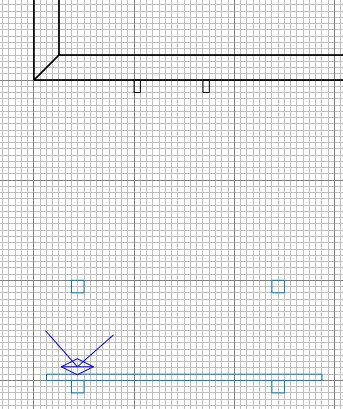
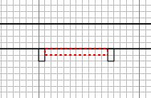
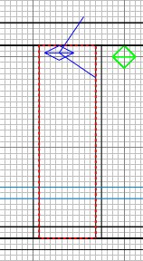
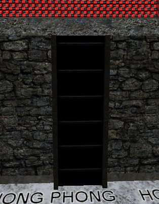

|
Apply Textures/metal_misc ametal_m03 to the
whole brush. Ordinarily you would caulk
the faces that won't be visible, but for the
moment we won't, because we can create a
prefab ladder which might be used in any
free-standing context. Once the prefab
is created, you would import it as needed and
then caulk the unseen faces that suit where
you've positioned it.
Set the brush to Make Detail.
Top down view again, select and duplicate
the ladder leg, and position it as shown and
press ESC. (You may want to hide the
sky if you keep selecting it by accident).

Draw the brush between them (and caulk it) that will serve as the ladder rungs.

Side view and position the rungs brush
properly between the ladder legs.

Make the brush Detail.
Now select the rungs face that the would-be
climber would go up and apply Textures/alpha
ladder texture. Press S and enter 1 in
the width box and 3 in the height and click
Fit. Then click Done and press
ESC. We use a texture that looks like
ladder rungs instead of individual ladder
rung brushes because:
- It's quicker for us to make
-
It's quicker for ET to draw: one face
instead of many faces on many brushes
If you want fancy rungs and you know there
is no pressure on the FPS and you can be
bothered, you can of course make individual
rungs, bricks, whatever, to indicate a
climbable structure to the players.
Make sure you make them Detail !

|